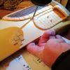

Explicación
Los pasos a seguir son bastante faciles y expuesto a tu imaginación
Paso 1 (Preparación de la teja)
Se limpia la teja con un paño húmedo, se señala los agujeros a 3cm del borde de arriba y a 3cm del lateral. Se hacen los agujeros con un trompo o con un destornillador, se pasa un alambre resistente por los agujeros y se aprieta por la parte trasera para poder colgar la teja, una vez terminada.
Paso 2 (Fabricación de platillas)
En este caso, queremos recrear un castillo y se tienen que hacer las plantillas de la almena, la ventana, la puerta, una fuente, el acerado y un fantasma (no hay castillo sin fantasma).
Estas plantillas se dibujan en el papel semiduro, por separado, con regla y teniendo en cuenta siempre el tamaño de la teja. Obviamente, estas deben de ser recortadas para su posterior calco en la pasta de modelar.Paso 3 (Fabricación de las plantillas en la pasta)
Se coge un buen trozo de pasta blanca, se hace un rollo largo o corto, dependiendo del tamaño de la figura que se desea crear.
Se aplasta el rollo de pasta con el rodillo hasta que tenga un grosor de 5mm más o menos. Con la ayuda de las platillas, se corta con el cuchillo o cutter por alrededor.
Una vez conseguida las figuras, utilizamos el cuchillo o cutter para señalar los detalles, imitando la piedra en los casos se la almena, la fuente, la acera y el sardinel de la puerta. También imitariamos la madera en el caso de la puerta y ventana. Finalmente, todo se pegaría en la teja con cola.
Se pone en la fuente 2 pequeños tubos de plasticos imitando los grifos, que se cortan de una barrita de tinta de una boligrafo acabado.
Paso 4 (Hacer alféizars)
 Se hacen rollos largos de pasta para hacer los alféizars de la ventana, la puerta y la fuente. Dichas figuras, se rodean con el rollo de pasta se pegan con cola, y procedemos a imitar la piedra con la ayuda del cuchillo o cutter y un boligrafo.
Se hacen rollos largos de pasta para hacer los alféizars de la ventana, la puerta y la fuente. Dichas figuras, se rodean con el rollo de pasta se pegan con cola, y procedemos a imitar la piedra con la ayuda del cuchillo o cutter y un boligrafo.
Paso 5 (Fabricación de tronco de enredadera)
Se coje otro trozo grande de pasta, se hace un rollo un poco mas grueso por una punta y finito por la otra. Se retuerce imitando un tronco de una enredadera y se pega en la teja.
Paso 6 (Fabricación de hojas para decorar la enredadera)
 Se aplasta con el rodillo un trozo de pasta hasta dejarla muy fina, y con la ayuda de un papel duro, que lo utilizaremos como plantilla, creamos las hojas que decoraran la enredadera más adelante.
Se aplasta con el rodillo un trozo de pasta hasta dejarla muy fina, y con la ayuda de un papel duro, que lo utilizaremos como plantilla, creamos las hojas que decoraran la enredadera más adelante.
Con la ayuda del cuchillo, se señala en cada hoja las estrías que las caracterizan y se dejan secar en un lugar donde se puedan dejar un poco dobladas las puntas de las hojas, que van clavadas en las flores, que despues fabricaremos.
Paso 7 (Bordillos de enredadera y fuente)
Hacemos 4 bolitas de pasta y las pegamos en la acera alrededor de la base de la enredadera para que haga de bordillo.
De la misma manera que fabricamos los alféizar, hacemos el bordillo de la fuente.
Paso 8 (Fabricación del cántaro de agua)
Hacemos una pelotita de pasta de arcillas, la clavamos en un palillo y la modelamos hasta conseguir una jarra o cántaro. Con una tirita se hace el asa del cántaro que se pegará con pegamento rápido cuando se seque.
Paso 9 (Pintar las hojas)
Una vez secas las hojas, las pintamos de un color verde brillante con la ayuda del cuter que las sujetan mientras las pintas con la brocha por la parte superior y laterales.
Paso 10 (Pintar)
Hemos escogido un color anaranjado para pintar todas las figuras que imitan la piedra. Un color marrón para las puertas y el tronco de la enredadera y un anaranjado mas suave para las paredes lisas.
Paso 11 (Resaltar la piedra)
Con una brocha con la pintura de la pared lisa, se pinta cada ladrillo y se difumina con una trapo para hacerlo resaltar. Y para las puertas y el tronco, se hace lo mismo pero con un color marrón muy claro haciendo envejecer la madera.
Paso 12 (Cortina de la ventana)
Cortamos un trozo del paño con encajes y lo pegamos en la ventana para simular que la cortina se sale, de la ventana, por el viento
Paso 13 (Desconchones de la fachada)
Para poder conseguir el efecto de algunos desconchones en la pared, hacemos unos cuadritos de masa, imitando el ladrillo, y los pegamos en la teja a nuestro antojo.
Paso 14 (Hacer agujeros para colgar antorchas)
Con un trompo, hacemos 2 orificios, antes señalados, para colgar posteriormente las antorchas que vamos a fabricar.
Paso 15 (Fabricación de visagras, cerraduras y llamador)
Aplastamos un trozo de masa, cortamos con el cutter 7 cuadritos y, con la ayuda del cutter, hacemos 6 pentágonos, que serán las visagras de puerta y ventana, un rectangulo pequeño que será la cerradura y un rosco para simular el ardabon.
Paso 16 (Resalte)
Pintamos los ladrillos que simulan el desconchon, del mismo color que se pintaron los alféizares.
Con el mismo color, nos disponemos a difuminar alrededor de cada figura, para crear una sensación de antigüedad.
Pintamos de color negro los grifos de la fuente.
Paso 17 (Flores o frutos para la enredadera)
Hacemos 8 bolitas, le clavamos y pegamos las hojas, pegamos las bolitas a la enredadera y clavando la punta de un boligrafo, vamos simulando los frutos.
Paso 18 (Pintar detalles)
Pintamos en dorado las visagras, la cerradura, el ardabón y los pegamos.
Pintamos las flores o frutos de diferentes colores para dar "alegría" a la fachada.
Paso 19 (Fabricación de antorchas)
Hacemos un rollo de masa, más fino por las puntas, lo cortamos por la mitad en 2 partes iguales, y con la ayuda del cutter simulamos las llamas de las antorchas en las partes mas gruesas.
Paso 20 (Fantasma del castillo)
Cogemos un trozo de masa, la aplastamos hasta tener un grosor de unos 5mm, y con la ayuda de la platilla del fantasma que hicimos anteriormente, recortamos la masa y la dejamos secar.
Paso 21 (Chorros de agua de la fuente)
Con la pistola de silicona transparente, Hacemos unas lineas finas y las dejamos secar, despues las recortamos y las pegamos a los grifos, teniendo en cuenta que uno de los chorros van directamente al cantaro.
Paso 22 (Fantasma y antorchas)
Pintamos el fantasma en blanco con una carita sonriente en negro y lo pegamos a la almena con pegamento rápido
Una vez pintadas las antorchas, con 2 alambres o cordones negros, rodeamos a cada antorcha, metemos estos por los orificios hechos anteriormente y lo fijamos detrás
Paso 23 (Barnizado)
Con un barníz satinado y una brochas suave, se barniza toda la teja por todas partes para protegerla del polvo y del agua.
Tabla de precios
| Nombre | Descripción | Precio |
|---|---|---|
| Pasta blanca de ceramica | Taco de pasta para modelar de cerámica | 1.99€ |
| Pasta de arcilla | Taco de pasta para modelar de arcilla | 1.99€ |
| Cutter estilo bisturí | Cutter estilo bisturí con recambios de cuchillas | 3.95€ |
| Cuchillo | Cuchillo afilado | 1.50€ |
| Pinturas acrílicas pequeñas | Tubo pintura acrílica pequeña | 2.50€ |
| Pinturas acrílicas grandes | Tubo pintura acrílica grande | 3.50€ |
| Teja | Teja de barro | 0.60€ |
| 16.03€ | ||
Form
Imagenes